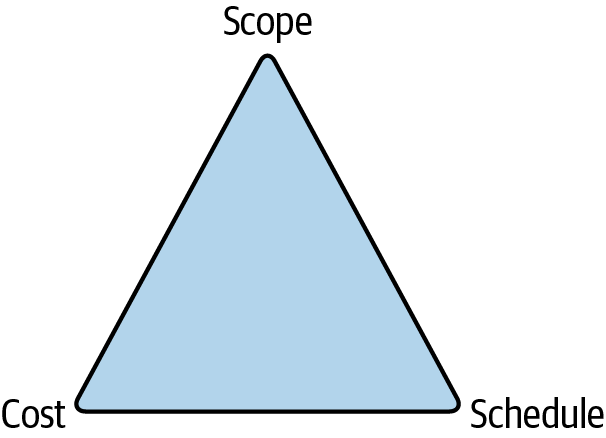
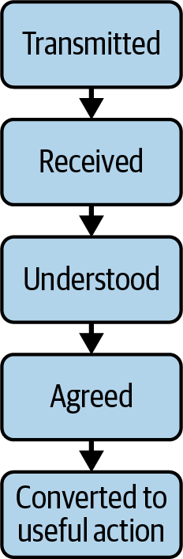

Software evolves, and that includes the software written by someone else that your software depends on. That could include operating systems, programming languages, libraries, databases, and applications. All of them will have both minor and major version changes, and you need to upgrade or migrate before versions go out of support (or more urgently, when the version you are on has a security vulnerability).
Keeping things up-to-date can become a long and tedious grind, sapping the joy for teams. However, if you invest in your ability to manage change, you can make this considerably less painful for everyone.
In this chapter, I want to start off by discussing the things you can do to minimize the impact of changes.
Then, I will cover the different types of changes that might affect you, from emergency changes in response to external factors, to planned changes at different scales in terms of time and commitment needed.
Next, we’ll explore two aspects of managing change. The first is responding to changes from outside your team. This could be from a platform team changing vendor, or someone either internal to your organization or outside it introducing major changes in their API.
The second is about how to manage the impact of changes you are making. This might be because you are choosing or being forced to move or upgrade versions from a vendor or provider, or it could be changes to your own software that others in your organization consume.
But before all of these, I want to explain why keeping things up-to-date can be particularly challenging when you adopt a microservice architecture.
Earlier in the book I noted that microservices are optimized for change, and a microservice architecture can help you to avoid a big-bang migration: no more having to upgrade a 70-package monolith to a new version of Java, or update thousands of stored procedures at once when you have a new major version of your database.
However, the world of microservices is one where you have a lot of different things, and that means lots of things that need to be upgraded or migrated.
Larger migrations, for example where you change the programming language, database, log aggregation tool, or hosting platform, are a particular challenge. These are easier to start in a microservice architecture, but it can take a long time to migrate hundreds of services, and it’s very easy to end up with a long tail of services that are still waiting to be migrated. That might be OK in some cases, but it adds more day-to-day work—another technology in the stack that has to be maintained and upgraded—and it also poses challenges around making sure you still have the right skills in place. You really don’t want to end up with a couple of critical services that are written in a language that none of your developers knows very well, because you are recruiting Node.js developers now and these were written in Ruby.
Modern software has a lot of dependencies, which means a lot of things to upgrade. We use open source libraries widely. We use SaaS solutions, calling out to code written by other people and running on computers we don’t own. We run using particular versions of our programming languages, which need to be upgraded periodically. And we run on servers where we may need to upgrade the image, the hardware, the Kubernetes version, etc. If we are using containers, we need to patch the container OSs. And finally, our services interact with other services that may change version—for example, you might need to upgrade the library that talks to the database.
Using code written and maybe even run by someone else saves a lot of time and effort for development teams, and it’s likely that something someone else wrote that is widely used will have far fewer bugs than something your team has just written to solve the same problem. Not to mention that you get to focus on the key outcomes for your business.
However, we don’t control the lifecycle of any of this third-party stuff. We may have to upgrade at relatively short notice. For example, when Docker Hub announced it was introducing rate limiting for container image pulls in 2020, at the FT we suddenly needed to think about exactly how our CircleCI build and deployment pipelines were working for containerized services. While in this case CircleCI subsequently worked with Docker Hub to minimize the impact, if that had not happened we would have faced a significant amount of unplanned work to integrate Docker Hub authentication into our pipelines (as well as an unexpected extra licensing cost).
There is a security risk here as well. You may have a dependency on something that is vulnerable to attack, either accidentally or deliberately.
Many open source libraries that are widely used and included in many other libraries are maintained by a small group of people. If they get burnt out and stop maintaining the code, or their credentials are compromised, you can be impacted.
There are plenty of things you can do to reduce the impact of changes on your team. These generally come down to restricting the number of different things you have to think about, choosing technology options that manage at least part of the stack for you, and reducing the time it takes when you do have to respond to a change, through automation for example. But the first thing to do is to consider the effort to maintain and support a technology as part of deciding to use it in the first place.
When we make decisions, it is easy to focus on the short-term benefits and costs. They are more salient to us because we are generally looking to solve a problem we have right now.
Thinking about the longer-term benefits and costs (and risks) can allow us to make different decisions, ones that might be easier to live with.
Of course, if you are building a website for an event happening in six months, and will decommission everything afterwards, you might make a different choice than for a product you expect to be the golden source of critical business data for the next five to ten years.
You may have a hard deadline for building this product, one that pushes you to choose something for speed of getting started, rather than ongoing cost or complexity. This is fine, but you should explicitly note that you are incurring an ongoing technical debt, and have a plan for addressing that (or choose to live with it!).
Much of the work to respond to change is toil: manual, repetitive, and doesn’t give you specific value (other than avoiding risk).1
Minimizing toil for product engineering teams is part of the explicit aim of paving the road, and people who are using the paved road should as far as possible have migrations and upgrades made easy for them.
In some cases, the work will be done by the platform team. For example, if you are running on a platform team’s servers, those servers might be upgraded by the platform team, one availability zone at a time to minimize impact, and with plenty of communication beforehand.
For many upgrades and migrations, the team that owns the service is the one that can best do the work: the team members are best placed to assess when to do it and to test that things are still working as expected.
What a central platform team can do is to make sure the paved road has a well-understood roadmap of migrations and upgrades, with plenty of advanced warning that these things are coming along. The team can provide easy-to-use automated patching and verification tools, or a well-documented process. Both these things make it easier to do the work but also ensure a level of consistency in how the work is done.
Platform teams need to be good at leading migrations and upgrades because this is a key part of their role, and doing it well is a key way that a platform team can help with the cognitive load of product engineering teams.
Of course, there are going to be cases where a product team needs to go off road. What then?
One way to reduce the work of upgrades is to choose managed services and SaaS options where at least some part of the day-to-day maintenance work is done for you.
If you install your own source control server, for example, then you have to keep the server OS patched and up-to-date, as well as upgrading the source control software periodically.
Using a SaaS alternative reduces the operational burden. You don’t need to worry about the server OS anymore, and you don’t have to upgrade the software.
This is a good principle, especially for platform teams that are operating central tools: don’t build things unless you have to.
However, there is a caveat. You may not have to spend much time doing upgrades, but you are giving up control of when these happen. That means you may have to deal with a breaking change at short notice, wrecking your plans for what you were going to do this quarter.
Using infrastructure as code for setting up new infrastructure, services, or build and deployment pipelines helps to standardize how those tasks get executed. However, often, people aren’t really storing infrastructure as code; they are instead storing configuration files in source control.
The issue here is that you have a template written in—for example—YAML, but you don’t have any testing or validation. That can lead to production issues when a change goes out that doesn’t work as expected; see this Skyscanner write up for an example.
Additionally, if you provide a template to your customers for them to execute, you give up control of it. They may amend the template, or they may keep using it without coming back to retrieve updated versions.
If you instead maintain control of the template by providing an API for your users to call, you keep control of the implementation.2 The API defines the fields a user needs to provide—for instance, for an API to spin up a database, you might want to know the type of database, and the size. You can change the implementation—for example, the version of PostgreSQL you spin up—without the customer needing to make a change.
Putting an API between your customers and the execution of a template also allows you to validate the information they provide: if someone specifies a size beyond a range you predefine, you can catch the error.
You still need a way to fix up those things created by calling an earlier version of the API. Let’s say you have an API that helps you spin up a Spring Java service. Six months in, you amend the template the API uses, or you upgrade some dependencies. Can you reapply it to existing services or do they all have to be fixed up manually? Even where that is a relatively small amount of work, as soon as you have many services it mounts up. A half-hour task done for 100 services is over a week of work and it’s not interesting work.
Again, though, an API makes that easier. You can version your APIs, and tag resources you create with that version, so you can find all the resources that need to be upgraded. Whether you do this upgrade for customers depends on the likelihood of things going wrong: I would not upgrade someone’s database to a new major version! But for a minor version, I would probably schedule the upgrade and let them know it’s coming.
Immutable infrastructure, where you deploy new code to a new server, rather than upgrading the existing one, minimizes configuration drift (where the actual configuration of a system gradually diverges from the expected configuration, generally as a result of manual actions). It also helps with upgrades because when you build the server from the current configuration held in source control, each new deployment applies upgrades that have been included in the template.
There are other benefits too: you are much more likely to treat servers as cattle rather than pets when they don’t hang around too long;3 and you are practicing taking servers offline and replacing them all the time, making it less scary to do.
Constantly look at what you have in your estate and actively decommission services when they are no longer bringing in value (easier said than done, I know). Deprecate versions so that you don’t end up supporting huge numbers of things—for example, browser or language versions.
Building a new version of a service shouldn’t be considered complete until it is live in production and the old version has been turned off. Leaving that running—beyond a “warranty” period where you may revert back to it—is likely to bite you, because running code costs money, increases risk, and it still has to be maintained.
Before I talk about how to respond to and manage changes, I want to lay out the three different types of change, and the key differences in how to approach these:
Unexpected but urgent: e.g., security issues, or a vendor being acquired or shut down
Work that needs to be done at some point, isn’t that risky, but probably doesn’t provide a huge amount of value: e.g., minor version upgrades for a programming language or database
Complicated, large-scale changes, with a high level of risk and potentially a high reward: e.g., migrating to the cloud, or changing source control provider
Sometimes something happens and you have no choice in the matter. You need to respond urgently, meaning all bets are off: you are going to impact people’s plans.
These urgent upgrades are often related to security issues. When the Log4Shell vulnerability hit, at the FT we treated it as an incident. We expected teams to make people available to understand how we were impacted and to mitigate the issue through applying patches.
Emergency changes can also happen because of third parties, either because you miss the implications of some announcement for you, or because of external events. For example, if you are using a tool from a startup, they can run out of funding, or be acquired and have their product shut down. While you can at least have a plan for what you would do if this company went out of business (and a good procurement team will have nudged you on this), you may still need to execute in a very short period of time.
When you know about an upgrade well ahead of time, there isn’t that sense of urgency, but the problem here is that until it’s urgent, teams may not get around to scheduling this tedious work that likely doesn’t bring any business value.
The opportunity here is to spread out the work so that there isn’t a crunch where lots of upgrades all need to happen. Have a roadmap for this work and talk teams through what they will definitely need to do in the upcoming quarter or two.
Teams that make upgrades part of their day-to-day process will often find it much easier than waiting and doing a big-bang upgrade.
Major changes are things like moving to a new programming language, hosting platform, data store, log aggregation tool, DNS provider, etc.—the possible list is long. These are the kinds of complicated projects that can easily take months or even years to complete.
Again, one of the advantages of microservices is that you don’t have to do a big-bang upgrade to a database or a programming language. You can start using the latest version of the programming language for new things and leave other services on an older version, provided that is still supported.
Of course, the risk here is that you end up with a lot of services on old versions of the programming language.
There are some important questions to ask yourself early on.
Is everyone expected to migrate, eventually? Generally, the answer should be yes because of the cost of maintaining duplicate capabilities. If you do expect to maintain alternatives, be clear on whether the old one is deprecated or whether new features or products can still choose to use it.
When will the old system get turned off? It’s too easy to do most of a migration but never quite finish it. Make the turn-off date explicit from early on and explain what will happen if people haven’t migrated by that date. Do expect to have teams negotiate to delay the date—this is fine in some circumstances: for example, no one wants to spend weeks doing a migration for a system that is due to be replaced within a year.
You should have a plan for gradual migration. This means having a policy that when you do make changes to a service, you also upgrade the version. Of course, this can be deeply annoying for a developer who just wants to make a small change and is suddenly bogged down in unrelated stuff, but it makes it less likely that this change is super painful than if you wait until a version is about to be deprecated.
As a platform team you need to be careful you don’t accrue more and more of these incomplete migrations, because it will slow you down far too much. Ultimately, you may need leadership support if you have a team that won’t schedule the work. Someone will need to decide the priority of finishing the migration.
Let’s consider the most challenging type of change: one that is on someone else’s schedule, and where you have to do the work.
If something you depend on changes, will you know about it in time? Can you fix it in time? Can you fix it at all?
It’s easy to find yourself the proud owner of a data store that you know almost nothing about. The stored procedures were all written three years ago, no one who was on the team then is still on the team now, and you’ve just discovered that the version you are on has three months before it no longer gets security patches. Unfortunately, the new version is a major upgrade, and you are going to have to fix all those stored procedures.
As long as you are using a data store that is part of the standard stack in the organization, you will be able to find people who can help. If you aren’t, then you are in a bit of trouble. How can you avoid this?
First up, make sure you don’t have unnecessary time pressures. If you are using technology that is your responsibility to fix up, make sure you are aware of end-of-life dates, and schedule upgrade work with time to spare.
You need to know what you have in your estate, and when it is going to need to be upgraded or replaced.
It’s hard work to keep on top of all the technology you have. At least gather that information together so that once one person has worked out when a language version is going end of life, anyone else can benefit from that knowledge.
Tools like https://endoflife.date can really help. This is an open source repository that gathers together information about versions of common software.
You also need to understand the roadmaps for key vendors. “Vendor Ops” can be a key responsibility of platform engineering teams. They need to know what new features are coming up, but also be aware of features that are going to be deprecated. Highly specialized teams, for example a machine learning or a data team, will likely have some vendor management too.
Finally, you need to know about security vulnerabilities that must be patched. You don’t want to find out about things like this because one developer happened to see a post on Mastodon!
While active ownership should involve making sure you patch security vulnerabilities, there is a place for central support and governance, because, as an organization, you want to know about and fix vulnerabilities.
This means things like scanning your dependencies. It’s a good idea to do that as code is created—for example, by incorporating scanning into the code commit process, or the build pipeline.
However, you also need to scan things that aren’t being regularly built, because these services still have dependencies that could have vulnerabilities. For example, someone may have found a bug in the version of the library your service is using. The simplest way to do this scanning might be to rebuild the services regularly even if you don’t deploy them.
Rebuilding services regularly is a good idea in any case, to make sure your services are always in a buildable state. This means that if you ever need to make a change to the service, you don’t have to first debug a build that has been failing for an unknown period of time.
Automated tools like Dependabot can go a step further than just identifying vulnerabilities, raising PRs to minimize the effort a team has to make to apply a patch or upgrade.
It feels natural to me that a platform group will get involved in critical upgrades and patches, even sometimes for software choices made by other teams: at the FT, when I headed up the platform engineering teams, I knew that the CIO would come to me to find out about whether we had all instances of a security vulnerability patched, even where teams were using things that our platform team hadn’t built. That meant building the tools to know what was being used in the estate, and running urgent patching processes using the same processes we used for any production incidents.
Guardrails and policies can be really helpful here.
Your organization should be clear about the expectations when responding to available upgrades. Set up a policy to define this.
For security-related patches, this could be a patching policy that says, “Highly critical vulnerabilities are patched within 2 days, lower level ones within 2 weeks.” For non-security-related patches, maybe you say, “We don’t run on unsupported versions of Java,” or take a harder line that you will never be more than one major version behind.
It’s not always a question of maximum time within a patching policy, you can also specify a minimum time.
When I was running the Content API team at the FT, we had some technology we used as part of our container stack that was fairly bleeding edge. New versions came out all the time, adding new features or fixing bugs.
In fact, new versions sometimes came out so frequently that we would still be doing one minor version upgrade when the next one came along.
We made a decision to wait a set time before applying any minor upgrades. This meant we could batch them. It also meant we could avoid any bugs that may have been introduced.
You will probably need a way to find all the services that are about to slip out of support and remind the owners to take action though, because these cases represent risk to the organization, whether you are running on unsupported versions of software or have an unpatched security vulnerability.
In the previous section, I focused on changes you have to make, in response to external factors including security vulnerabilities and versions going out of support.
The other sort of change is where you choose to schedule work for a change in your technology. But how do you make that sort of decision? And who gets to make it?
How would you make the decision to move to the cloud? Or to adopt a new programming language? Or that this is the right time to upgrade the database to the new version?
This reflects back to the discussion in Chapter 11 about choosing technologies, and there is the same tension between local and global optimization. There are some choices that can be made within a team, for that team. Other choices have a wider impact, and need to be considered for the organization as a whole.
It is a good idea to be clear on which decisions require consensus: generally, if you are introducing an alternative for something that is part of the paved road, you shouldn’t be making that decision at a team level. That means that things like a new programming language, CI tool, or hosting provider are more organizational-level decisions, and ones that will likely need the involvement of a platform team to drive the process.
A technology governance forum, like the FT’s TGG (Tech Governance Group), discussed in Chapter 11, is a good place to discuss high-impact decisions. However, there are actually two decisions: the first is whether to do the migration, and the second is when to do it.
There are lots of things you could do next quarter, as teams or as an organization. Work to upgrade or migrate is not often the most exciting work, but there can be real value involved in moving to something new, and there is real risk in not keeping things up-to-date.
Often, migrations are proposed by teams that own the relationship with the vendors, but a lot of the work will need to be done by many other teams. That means understanding the challenges facing those teams.
You have to find a balance between product-focused work and technical work. That means understanding the product strategy and any constraints: if there is a big product launch with a constrained date coming up, maybe now is not the time to move a key part of the stack.
The first thing I want to say about big migrations is, consider very carefully whether you want to do a migration you aren’t being forced into, and that isn’t a strategic goal for your organization (something like a cloud migration). Often, people want to move because they are unhappy with a vendor’s support levels or can see an alternative that’s going to save a chunk of money. The question isn’t whether this is better or cheaper, the question is whether it is enough better or cheaper that you want to spend a quarter doing the drudgery of moving everyone to it.
Sometimes, the suggestion of moving to a new tool comes from outside the platform team, when someone sees an alternative that looks better and has some shiny new features. Half the job of a platform team is to say, “Yes, that looks cool, but will it help with our business challenges?” But it is important to leave a space to recognize something significantly better. Letting a team try out the new tool, then taking an organizational-level decision on whether it should replace the old tool is a good way to test the waters.
The final comment I have on making decisions is to take the time to articulate the benefits and the costs. What are the consequences if you do nothing, or do nothing for six months? What else could you be doing that might deliver higher value to your organization?
Having this information will help you to make the decision on whether to make this change and when.
How should you approach managing a change? This might be for code you wrote: for example, making a breaking change to an API you own.
It may be for software you manage, such as a migration to a new DNS provider. Platform teams do a lot of this type of migration, and these can be complex and long-running projects. Getting good at migrations is important for keeping your customers happy!
What makes it more likely that a migration will be successful? I have three things I like to focus on:
Start by making sure you are completely clear on what you are doing and why—and the impact and cost of any delays.
Make sure everyone knows about this migration, what they need to do, and by when. You should communicate in every way possible and repeat the message frequently.
You should put yourself in your customers’ shoes. Here, you can learn from behavioral economics, popularly known as nudge theory, and based on the idea that small changes can influence people’s choices—for example, putting fruit rather than cookies next to the checkout. Thinking in terms of nudges can increase your chances of getting things done quickly and as painlessly as possible.
The first thing to be clear about is why you are doing this work, and why you are doing it now. Hopefully, you wrote a case for this work and can now share it with the people who are going to be taking part. I have found that explaining the decision-making process can reduce the pushback you get from people, because they can follow your reasoning.
The next thing to be clear about is where the finish line is. This could be a deadline, when you need to migrate because something is being deprecated. It might be a list of essential tasks to complete. It could also be when you run out of money, or people have to move on to something else.
There are three constraints for any project: schedule, cost, and scope (see Figure 14-1).

It is a good idea to know up front which of these are most important for this project, and in particular, if there is one that really cannot change.
As I’ve mentioned previously, we started using containers very early at the FT. My team built our own orchestration using Linux tools such as Fleet and systemd among other things.
Once Kubernetes got production ready, we wanted to move to it. And at that point, it was largely a cost decision, based on the cost of maintaining and running a complicated system that we’d built ourselves. But just after we started work on this migration, Fleet was deprecated, with a year to migrate away from it. So now, the key constraint for us was schedule. We had a deadline. This encouraged us to remove any noncritical scope and to accept some costs to run in parallel, because we had to hit the deadline.
You need to understand who will have to do work outside your team, what that work is, and how complex it is. You also need to understand the context they are working in: will they prioritize this work? Can they, even if they see the value?
If a team is doing something critical or time sensitive and won’t be able to collaborate with you, it’s better to understand early, before you commit too much of your own time or money (and this is the point where you can escalate to leadership to say “Which of these things is more important?”).
Finally, you need to be clear on the consequences of cutting scope, not meeting a deadline, or failing to have people available to work on something else because you are running late. Often, people set deadlines that are somewhat arbitrary. Where you have a hard deadline, you need to be very clear about this.
For example, that migration to Kubernetes I mentioned in the earlier note. Once something is past end of life, you have no guarantees on what happens if a vulnerability is found. There may be no patched version available. So, this wasn’t a deadline we felt we could miss.
Clarity will really help you. It might make you realize this is a bad idea. Or a bad idea right now. I’d rather understand that early.
When you are managing change, communication is very important. Mostly, teams don’t do enough of this, because they assume that every transmission is 100% successful.
But that’s not true. People are on holiday and miss the All Hands meeting, or weren’t in the Slack channel or email group (#everyone_in_product_and_tech is almost certainly not everyone in product and tech). But even if the person got the email or was in the meeting, they may not have been paying attention or they may not have realized this applied to them.
In March 2020, before the UK locked down for coronavirus, we had a suspected case on my floor of the office. We found out just after most people had left for home. So we spent the evening getting in touch with people to ask them to work from home the next day. We emailed people, sent Slack messages—and we phoned people if we knew their numbers. We still had a couple of people turn up at the office the next day because they hadn’t seen any of those messages.
And that’s for a simple message…anything more complicated can be both missed and misunderstood!
If you are asking for something with multiple steps, be clear about:
What people need to do
When they need to do it by
What will happen if they don’t do it by then
This is another place where a Tech Governance Group (described in detail in Chapter 11) can help, because it is a great “information radiator.” People hear what’s coming up.
I found Alia Rose Connor’s model for stages of communication (mentioned in a blog post by Jason Yip) quite illuminating, because it shows that effective communication needs to be two ways: it’s not enough to transmit; you also need to check the message was received. See Figure 14-2.4

You control the transmission of a message, and you should aim to do that more than once, and in different ways, so that people can catch up with it later/see it in a way that suits them.
After that, though, you should check the message has been received, understood, agreed, and actioned.
My colleague at the FT, Alice Bartlett, used to head up the Origami team, which build services, components, and tools used to create digital products. Origami is a platform team for frontend components, with many customers within the FT. I learned a lot from how Alice and her team approached big changes, and I’m going to share some key points here.5
Unless you have to. Let’s say you own an API, and you realize you got the interface wrong. You should have had a list rather than an object in the JSON format. But, people are already using your API!
Resist the urge to tidy up and pretend you never made the mistake, because if you remove a field, you have a breaking change—unless no one is currently making use of it, and all of your consumers ignore fields they don’t need. That’s a good policy, but you’d better be sure that’s what people are doing! In practice, pretty much any behavior that exists in your API will be relied on by someone, regardless of whether it is documented as part of the interface. This is Hyrum’s Law, and let me give an example I’ve seen: the order of fields in a JSON object is not supposed to be significant. However, people can write code that treats the JSON as a String, and if you change the order of fields in your JSON response, their implementation will quite possibly break.
If you know that the new format will be easier for people to use, add a new field and tell people about it. Deprecate the old one and encourage people to migrate. But don’t remove the old field.
If people depend on your tooling, or your APIs, you should be very serious about not breaking the contract unexpectedly.
If you do have to introduce a breaking change, give a lot of notice. Six months is not excessive. It should be longer if it will involve a lot of work to migrate—for example, to change your source control provider, or log aggregation tool.
To effectively give notice, you need to know who uses your tool or API. This is where monitoring calls or having requests go via an API gateway can really help.
Work out how you’ll track that you sent out messages and that someone registered that this means they have to do something.
One thing Alice did was send emails directly to either the product owner or the tech lead. An email that says, “Hey Sarah, I notice your team is using the content list API in your streampage service, and we’re going to be replacing that in 6 months’ time” is very concrete and does the work of confirming that this person and their team are going to be affected. Addressing it to a specific person makes it clear that you see them as the person who is responsible for driving the change.
Follow up periodically. Make sure you get a reply that says, “Yep, got this.”
Be very clear about the date this will get turned off. Put it in bold, right at the top of the message.
Tell people what will happen to them if they don’t take action in time.
If you can give people detailed instructions of what they need to do, then do that. If these are short, put them in the message. Otherwise, write a document and link to it in the email.
Tell them how to get in touch if they have questions or concerns.
Try to have empathy with your consumers. That means understanding their needs, and anticipating their reactions. Think about what would make it easier for them to do what you need them to do, or would persuade them that this is necessary.
Here, you can borrow some ideas from behavioral economics.
This is nudge theory, named and popularized by Richard Thaler and Cass Sunstein.6 However, I discovered this through a book by David Halpern of the UK government’s Behavioural Insights Team.7
Nudges are small changes that are intended to make it more likely that people will behave in a particular way or make a particular choice. The idea is that you can influence people, rather than forcing them.
Nudging behavior is very popular with governments—or at least it was for the Obama and Cameron governments—probably because it’s about how to achieve change without having to spend money or pass legislation.
What I found when I read the book was that I could identify many things that worked for us at the FT when managing change. It’s more effective to provide reasons for people to upgrade or migrate than it is to force them through a top-down mandate.8
Let me start by giving a few examples of effective nudges.
The canonical example is putting a painting of a fly (small insect, for clarity) in a urinal at Schiphol airport. With something to aim at, the urinal manufacturer claimed savings of about 20% of cleaning costs. Now, I can’t find any research to back this up, so I want to talk in a bit more detail about a case study that was a little more rigorous.
In the UK, organ donation is via an opt-in register. You have to sign up to say you are willing to donate organs. Research shows that 90% of people in the UK support organ donation, but only 30% are signed up.
When you apply for a driving license or renew car tax, you are prompted to join the organ donation register, and the UK ran a large randomized controlled trial, with eight variants.9
They tried a few different nudges:
Talking about social norms: “Every day thousands of people who see this page decide to register”
Framing with positive or negative consequences: “Three people die each day because there are not enough organ donors,” “You could save or transform up to 9 lives as an organ donor”
Framing in terms of reciprocity: “If you needed an organ transplant, would you have one?”
Pointing out the gap between numbers who support versus numbers who register: “If you support organ donation please turn your support into action”
Adding pictures to some of the prompts
The results showed that reciprocity had the biggest impact in persuading more people to sign up, followed by the framing in terms of negative consequences. Notably, adding a picture in some cases made fewer people sign up.
The increase was around 0.8%, which seems pretty small. But it’s low cost to make a tweak to text on a web page (hopefully!) and in a year, the difference amounted to nearly 100,000 additional registrations.
And when you use these kinds of nudges in an organizational context, they can be much more targeted. They can help remove friction around getting things done.
The Nudge Unit developed a framework called EAST. Essentially, you should focus on making things Easy, Attractive, Social, and Timely—and these are useful prompts for thinking about how to engage with the teams you are depending on to take action.
This starts with making sure you provide a clear message about what people need to do: make it easy for them to understand what you are asking of them.
Then, make it as simple as possible to get started. That means removing dependencies so that people can do the work when they have the time, asynchronously. Create detailed, accurate, and friendly documentation. Make sure things like setting up keys are self-service. Be clear on where people come to if they can’t get things to work, respond quickly to those requests, and then update the documentation so the next person doesn’t have to come and ask you!
It’s great if you can provide tools to let people see what they’ve done and what they have left to do. If you can show a dashboard with every team and their services and which have been migrated, that lets people see at a glance whether they still have work to do (and catches places where you don’t have the same understanding of which systems need to be migrated).
One thing you can do to make a change easy is to do at least some of the work for the teams. When we wanted teams to migrate to a new Change API to log releases, we wrote scripts to integrate into common CI tools at the FT and actually did that migration for some teams. This helped test out the tools but was also about building productive working relationships.
One other aspect of making something easy is around the power of defaults. We have a strong tendency to go with the default option, which is why a decision to opt out versus opt in can be very powerful.10 But beyond that, if you supply good defaults, ones that will work in most cases, you make it a lot easier for teams.
You want to attract people’s attention so they realize you are expecting them to do something. This is pretty much covered in the previous sections about communication and making sure you do enough of it, in lots of different ways.
You also want to make it attractive to do the work in terms of what the team will get out of it: give them an incentive. This doesn’t have to be large. One UK bank encouraged people to donate a day’s salary to charity. An email saw 5% take up. An email paired with sweets branded with a charitable message got 11% take up. Personalizing the emails as well led to 17% take up. This is a big impact from small changes!11
These incentives can be positive: for example, our new Change API was more resilient and had better integration with CI pipelines. The incentives can also be about avoiding the negative: this applies where you need to migrate or upgrade because of bugs or cost.
Sometimes, the plain truth is that you just need to do something. If that is the case, explain why. For example, at the FT we had to migrate DNS providers because the one we were using was acquired and then switched off. The team managing this process gave as much notice as possible, did a lot of the work, and built a much better replacement, but it was still work that we didn’t choose to do.
We are social beings. Describing what most people do in a situation, or saying that 90% of people in their street have already done something, is a powerful incentive. This is where dashboards that show progress across teams or groups of teams can be really effective—as long as some people are doing the work: it can backfire if it’s obvious everyone is ignoring the call to action!
If one team has finished a migration or upgrade, see if you can get the members to talk about their experience, hopefully about how easy it was. Additionally, make sure you give them a shout out!
Studies show that public commitments to do something make it much more likely to happen. This is why I like to see migrations or upgrades my teams are responsible for mirrored in other teams’ OKRs.
When you ask people to do something makes a difference. Make sure you do it at a time they are likely to be receptive, and not when they are in the last weeks before they need to get a big feature live!
This is where automation and guardrails can help: people find out about the requirement when they are already working in that area. This is particularly useful where you want people to use the new approach for new services.
Where you need people to do work, make sure you give as long a notice as you can, but understand that that also means people will feel fine putting off taking action!
Highlight both short- and long-term benefits. People are generally not great at assessing costs and benefits over the lifecycle of something; for example, they focus more on the purchase price of a car than on the costs of running it. And for lots of things, there are short-term costs and long-term benefits—this often applies to changes that are meant to increase security or reduce costs.
If you can give some short-term incentive, however small, try to do that—it may have a disproportionate impact.
Finally, there’s a gap between intentions and behavior. If you can help people make an action plan, they are more likely to cross that gap. Public commitments are powerful. If migration work is tied to a public goal or appears on a roadmap, it’s much more likely it’s actually going to happen.
Generally there are two significant milestones in a migration:
The new service is used for any new use cases, and the old service is deprecated.
The old service is no longer being used and can be decommissioned.
You really want to avoid reaching milestone 1 but never quite getting to milestone 2. Make sure you finish.
Track upgrades and migrations until they are over. Don’t let a new thing come in without having an agreed-upon plan for what happens to the previous approach. Maybe you let it run in parallel, but that should be a deliberate decision.
It’s good to set a time where migrations need to be completed. I’d expect to have to push this back at least once because of competing priorities, but as someone who ran a platform team, the worst case is that a product team never quite prioritizes the migration and you have to pay for and support multiple options for months or even years.
Leadership support can help, but there is one more technique you can leverage. Stuart Davidson of Skyscanner spoke about it at QCon London in 2019. If you get pushback on decommissioning a given tool, there is always the option to say, “Fine, you can keep using the tool, but that means we will hand it over to you to own.”12
If you are overwhelmed by the amount of maintenance and upgrades you need to do, start by gathering information. What technologies do you use, and when are you going to have to upgrade? When are your contracts up for renewal? What migrations need to be done for strategic reasons?
You want to build a roadmap of necessary and planned changes, prioritizing what gets done first.
You can also use this information to get an idea of what percentage of teams’ time is going to be spent on this kind of task.
If it’s high, could you benefit from setting up a platform team or a paved road? If you currently have all your teams building solutions to solve the same issues, you will likely benefit from doing things only once. Look also at places where you could standardize, use managed services, or SaaS.
Start to build up regular communication through multiple channels, giving people plenty of notice of work they will need to do.
Focus on communicating necessary upgrades, including what people will need to do, what the deadline is, and what will happen if they haven’t upgraded by that point. Track progress for any migration, making sure you don’t have a long tail of services running on out-of-date versions of software, or two different solutions needing to be maintained and supported for long periods of time.
Change is frequent in a microservice architecture. Make choices that minimize the impact, whether that is using a paved road provided by a platform team, or using SaaS or serverless solutions.
Make sure you know what changes are heading your way: be aware of vendor roadmaps, dates when software versions are going end of life, and security vulnerabilities that affect parts of your estate.
If you are managing change, be clear about what you are asking people to do. Communicate repeatedly, in lots of ways, and make sure people have understood what they need to do.
Have empathy for your customers: they likely have their own set of priorities. Make sure they understand what led you to decide on a migration, whether that’s because of unavoidable constraints or because of new opportunities it will give the organization. At least make it easy for them to make the change, attractive in terms of what they get from it, share what others are doing, and try to avoid asking people to make a change when they are about to deliver a big feature.
Finally, make sure you finish migrations. If you don’t, you now need to support two different systems, which will slow down everything you do.
1 I like the full definition of toil given in the Google SRE book: “Toil is the kind of work tied to running a production service that tends to be manual, repetitive, automatable, tactical, devoid of enduring value, and that scales linearly as a service grows.”
2 Thanks to Abby Bangser for crystallizing this difference for me.
3 See Randy Bias’s history of the idea of pets versus cattle.
4 Jason Yip, “Why Aligned Autonomy Is an Ongoing Struggle”.
5 This blog post is six years old, but it is still full of great points for a team building tools and services for others.
6 Richard H. Thaler and Cass R. Sunstein, Nudge: The Final Edition, 2nd ed. (Yale University Press, 2021).
7 David Halpern, Inside the Nudge Unit: How Small Changes Can Make a Big Difference, 2nd ed. (W H Allen, 2019).
8 Of course sometimes you need to make a call that a change needs an urgent response, but even then, you should be aiming to use these nudges to make it more appealing.
9 See “One link on GOV.UK—350,000 More Organ Donors”.
10 The UK government changed workplace pensions from opt in to opt out and saw significant changes in participation, pretty much double in some cases; see “Automatic Enrolment Opt Out Rates: Findings from Research with Large Employers”.
11 See “How Do You Get Bankers to Donate to Charity? Give Them Sweets, Finds the Government’s Team Trying to Change Our Behaviour”.
12 See a transcript of the talk “Change Is the Only Constant”.